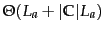
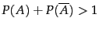

Historically, the classic Reuters-21578 collection was the main benchmark for text classification evaluation. This is a collection of 21,578 newswire articles, originally collected and labeled by Carnegie Group, Inc. and Reuters, Ltd. in the course of developing the CONSTRUE text classification system. It is much smaller than and predates the Reuters-RCV1 collection discussed in Chapter 4 (page 4.2 ). The articles are assigned classes from a set of 118 topic categories. A document may be assigned several classes or none, but the commonest case is single assignment (documents with at least one class received an average of 1.24 classes). The standard approach to this any-of problem (Chapter 14 , page 14.5 ) is to learn 118 two-class classifiers, one for each class, where the two-class classifier for class  is the classifier for the two classes
is the classifier for the two classes  and its complement
and its complement
 .
.
For each of these classifiers, we can measure recall, precision, and accuracy. In recent work, people almost invariably use the ModApte split , which includes only documents that were viewed and assessed by a human indexer, and comprises 9,603 training documents and 3,299 test documents. The distribution of documents in classes is very uneven, and some work evaluates systems on only documents in the ten largest classes. They are listed in Table 13.7 . A typical document with topics is shown in Figure 13.9 .
In Section 13.1 , we stated as our goal in text classification the minimization of classification error on test data. Classification error is 1.0 minus classification accuracy, the proportion of correct decisions, a measure we introduced in Section 8.3 (page 8.3 ). This measure is appropriate if the percentage of documents in the class is high, perhaps 10% to 20% and higher. But as we discussed in Section 8.3 , accuracy is not a good measure for ``small'' classes because always saying no, a strategy that defeats the purpose of building a classifier, will achieve high accuracy. The always-no classifier is 99% accurate for a class with relative frequency 1%. For small classes, precision, recall and  are better measures.
are better measures.
We will use effectiveness as a generic term for measures that evaluate the quality of classification decisions, including precision, recall,  , and accuracy. Performance refers to the computational efficiency of classification and IR systems in this book. However, many researchers mean effectiveness, not efficiency of text classification when they use the term performance.
, and accuracy. Performance refers to the computational efficiency of classification and IR systems in this book. However, many researchers mean effectiveness, not efficiency of text classification when they use the term performance.
When we process a collection with several two-class classifiers (such as Reuters-21578 with its 118 classes), we often want to compute a single aggregate measure that combines the measures for individual classifiers. There are two methods for doing this. Macroaveraging computes a simple average over classes. Microaveraging pools per-document decisions across classes, and then computes an effectiveness measure on the pooled contingency table. Table 13.8 gives an example.
The differences between the two methods can be large. Macroaveraging gives equal weight to each class, whereas microaveraging gives equal weight to each per-document classification decision. Because the  measure ignores true negatives and its magnitude is mostly determined by the number of true positives, large classes dominate small classes in microaveraging. In the example, microaveraged precision (0.83) is much closer to the precision of
measure ignores true negatives and its magnitude is mostly determined by the number of true positives, large classes dominate small classes in microaveraging. In the example, microaveraged precision (0.83) is much closer to the precision of  (0.9) than to the precision of
(0.9) than to the precision of  (0.5) because
(0.5) because  is five times larger than
is five times larger than  . Microaveraged results are therefore really a measure of effectiveness on the large classes in a test collection. To get a sense of effectiveness on small classes, you should compute macroaveraged results.
. Microaveraged results are therefore really a measure of effectiveness on the large classes in a test collection. To get a sense of effectiveness on small classes, you should compute macroaveraged results.
|
|
|
|||||||||||||||||||||||||||||||||||||||||||||||
| (a) | NB | Rocchio | kNN | SVM | ||||
| micro-avg-L (90 classes) | 80 | 85 | 86 | 89 | ||||
| macro-avg (90 classes) | 47 | 59 | 60 | 60 | ||||
| (b) | NB | Rocchio | kNN | trees | SVM | |||
| earn | 96 | 93 | 97 | 98 | 98 | |||
| acq | 88 | 65 | 92 | 90 | 94 | |||
| money-fx | 57 | 47 | 78 | 66 | 75 | |||
| grain | 79 | 68 | 82 | 85 | 95 | |||
| crude | 80 | 70 | 86 | 85 | 89 | |||
| trade | 64 | 65 | 77 | 73 | 76 | |||
| interest | 65 | 63 | 74 | 67 | 78 | |||
| ship | 85 | 49 | 79 | 74 | 86 | |||
| wheat | 70 | 69 | 77 | 93 | 92 | |||
| corn | 65 | 48 | 78 | 92 | 90 | |||
| micro-avg (top 10) | 82 | 65 | 82 | 88 | 92 | |||
| micro-avg-D (118 classes) | 75 | 62 | n/a | n/a | 87 | |||
In one-of classification (more-than-two-classes), microaveraged  is the same as accuracy (Exercise 13.6 ).
is the same as accuracy (Exercise 13.6 ).
Table 13.9 gives microaveraged and macroaveraged effectiveness of Naive Bayes for the ModApte split of Reuters-21578. To give a sense of the relative effectiveness of NB, we compare it with linear SVMs (rightmost column; see Chapter 15 ), one of the most effective classifiers, but also one that is more expensive to train than NB. NB has a microaveraged  of 80%, which is 9% less than the SVM (89%), a 10% relative decrease (row ``micro-avg-L (90 classes)''). So there is a surprisingly small effectiveness penalty for its simplicity and efficiency. However, on small classes, some of which only have on the order of ten positive examples in the training set, NB does much worse. Its macroaveraged
of 80%, which is 9% less than the SVM (89%), a 10% relative decrease (row ``micro-avg-L (90 classes)''). So there is a surprisingly small effectiveness penalty for its simplicity and efficiency. However, on small classes, some of which only have on the order of ten positive examples in the training set, NB does much worse. Its macroaveraged  is 13% below the SVM, a 22% relative decrease (row ``macro-avg (90 classes)'' ).
is 13% below the SVM, a 22% relative decrease (row ``macro-avg (90 classes)'' ).
The table also compares NB with the other classifiers we cover in this book: Rocchio and kNN. In addition, we give numbers for decision trees , an important classification method we do not cover. The bottom part of the table shows that there is considerable variation from class to class. For instance, NB beats kNN on ship, but is much worse on money-fx.
Comparing parts (a) and (b) of the table, one is struck by the degree to which the cited papers' results differ. This is partly due to the fact that the numbers in (b) are break-even scores (cf. page 8.4 ) averaged over 118 classes, whereas the numbers in (a) are true  scores (computed without any knowledge of the test set) averaged over ninety classes. This is unfortunately typical of what happens when comparing different results in text classification: There are often differences in the experimental setup or the evaluation that complicate the interpretation of the results.
scores (computed without any knowledge of the test set) averaged over ninety classes. This is unfortunately typical of what happens when comparing different results in text classification: There are often differences in the experimental setup or the evaluation that complicate the interpretation of the results.
These and other results have shown that the average effectiveness of NB is uncompetitive with classifiers like SVMs when trained and tested on independent and identically distributed ( i.i.d. ) data, that is, uniform data with all the good properties of statistical sampling. However, these differences may often be invisible or even reverse themselves when working in the real world where, usually, the training sample is drawn from a subset of the data to which the classifier will be applied, the nature of the data drifts over time rather than being stationary (the problem of concept drift we mentioned on page 13.4 ), and there may well be errors in the data (among other problems). Many practitioners have had the experience of being unable to build a fancy classifier for a certain problem that consistently performs better than NB.
Our conclusion from the results in Table 13.9 is that, although most researchers believe that an SVM is better than kNN and kNN better than NB, the ranking of classifiers ultimately depends on the class, the document collection, and the experimental setup. In text classification, there is always more to know than simply which machine learning algorithm was used, as we further discuss in Section 15.3 (page  ).
).
When performing evaluations like the one in Table 13.9 , it is important to maintain a strict separation between the training set and the test set . We can easily make correct classification decisions on the test set by using information we have gleaned from the test set, such as the fact that a particular term is a good predictor in the test set (even though this is not the case in the training set). A more subtle example of using knowledge about the test set is to try a large number of values of a parameter (e.g., the number of selected features) and select the value that is best for the test set. As a rule, accuracy on new data - the type of data we will encounter when we use the classifier in an application - will be much lower than accuracy on a test set that the classifier has been tuned for. We discussed the same problem in ad hoc retrieval in Section 8.1 (page 8.1 ).
In a clean statistical text classification experiment, you should never run any program on or even look at the test set while developing a text classification system. Instead, set aside a development set for testing while you develop your method. When such a set serves the primary purpose of finding a good value for a parameter, for example, the number of selected features, then it is also called held-out data . Train the classifier on the rest of the training set with different parameter values, and then select the value that gives best results on the held-out part of the training set. Ideally, at the very end, when all parameters have been set and the method is fully specified, you run one final experiment on the test set and publish the results. Because no information about the test set was used in developing the classifier, the results of this experiment should be indicative of actual performance in practice.
This ideal often cannot be met; researchers tend to evaluate several systems on the same test set over a period of several years. But it is nevertheless highly important to not look at the test data and to run systems on it as sparingly as possible. Beginners often violate this rule, and their results lose validity because they have implicitly tuned their system to the test data simply by running many variant systems and keeping the tweaks to the system that worked best on the test set.
Exercises.
The function APPLYMULTINOMIALNB in Figure 13.2 has time complexity
. How would you modify the function so that its time complexity is
 ?
?
| docID | words in document | in |
|||
| training set | 1 | Taipei Taiwan | yes | ||
| 2 | Macao Taiwan Shanghai | yes | |||
| 3 | Japan Sapporo | no | |||
| 4 | Sapporo Osaka Taiwan | no | |||
| test set | 5 | Taiwan Taiwan Sapporo | ? |
(i) Compute the parameters (priors and conditionals) of a multinomial NB classifier that uses the letters b, n, o, u, and z as features. Assume a training set that reflects the probability distribution of the source perfectly. Make the same independence assumptions that are usually made for a multinomial classifier that uses terms as features for text classification. Compute parameters using smoothing, in which computed-zero probabilities are smoothed into probability 0.01, and computed-nonzero probabilities are untouched. (This simplistic smoothing may cause . Solutions are not required to correct this.) (ii) How does the classifier classify the word zoo? (iii) Classify the word zoo using a multinomial classifier as in part (i), but do not make the assumption of positional independence. That is, estimate separate parameters for each position in a word. You only need to compute the parameters you need for classifying zoo.
event word English? probability 1 ozb no 4/9 2 uzu no 4/9 3 zoo yes 1/18 4 bun yes 1/18
 |
(138) |
Show that mutual information and information gain are equivalent.